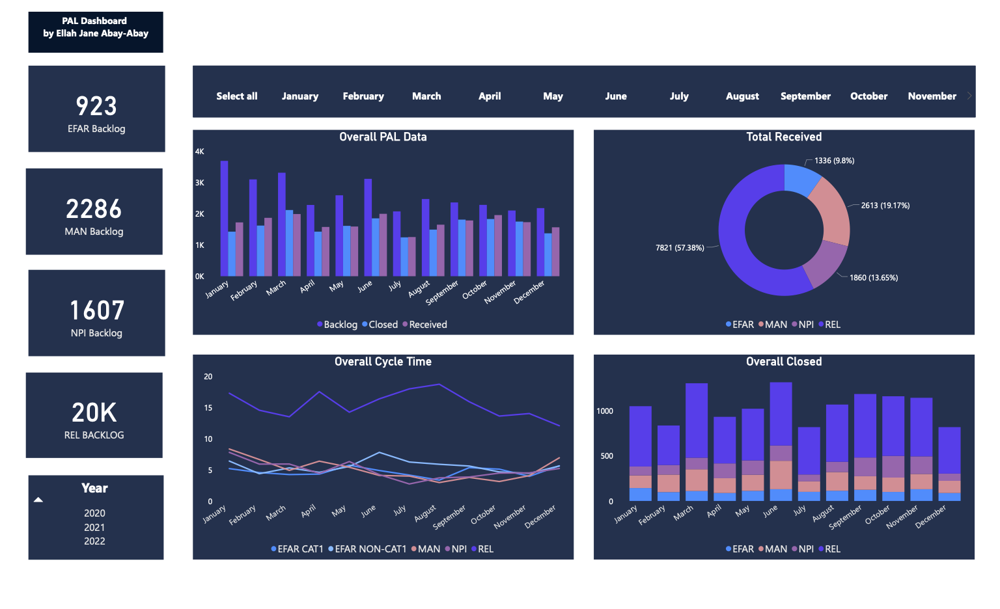

MS Power BI PAL Dashboard
This dashboard is a product performance power BI dashboard that tracks the overall productivity of an organization. It displays the total numerical backlog values per customer or category, and the also for selection of months and years. It also has different kinds of charts for the overall performance in terms of received requests, closed requests and comparison of actual cycle time from each customers or categories of Product Analysis Lab.
The goal of this dashboard is to easily demonstrate the overall performance of the Product Analysis Lab through various kinds of data visualization. It is important to present a data in a way that it can easily be analyzed and interpret by the user.
The dashboard is divided into several sections. For the overall PAL data, a clustered column chart is applied to show the comparison of backlogs, closed and received requests. Donut chart is used to compare the received request from the different customers or categories to the overall PAL received requests. This chart is best used to compare a particular section to the whole, rather than comparing individual sections with each other. To present sequential values to help you identify the trend of each categories over time, line chart is the best chart to use. Stacked charts are an incredibly effective tool for comparisons and designed to compare total values across categories. For the filtering of months and years, slicers is also applied. Card is useful to show a single numerical value of the backlogs from each categories.
